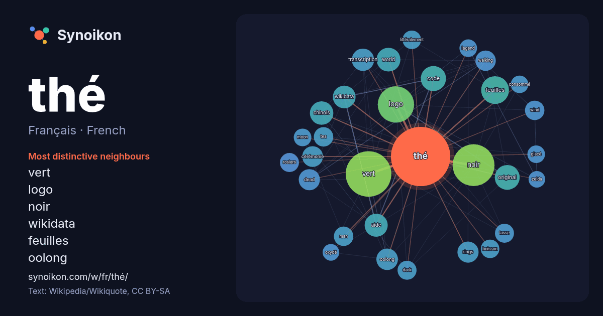

Français · French · word of the day list
thé
“tea” · The words found around it in 2163 instances from French Wikipedia, Wikiquote.

Most distinctive neighbours
- vert 74×
- logo 67×
- noir 46×
- wikidata 31×
- feuilles 28×
- oolong 28×
- transcription 28×
- original 26×
- dead 25×
- walking 25×
- rings 25×
- tea 23×
- wind 22×
- aide 22×
- world 22×
- tasse 22×
- rosiers 21×
- code 21×
- dark 20×
- chinois 19×
× = how many times more often than in general French Wikipedia text.
Most frequent neighbours
- vert 121
- noir 102
- logo 77
- film 67
- feuilles 45
- série 39
- code 37
- original 36
- world 33
- chinois 32
- aide 31
- wikidata 30
- album 29
- transcription 29
- appelé 28
- blanc 27
- oolong 27
- dead 26
- rings 26
- cérémonie 25
In context
- Pour les articles homonymes, voir Thé (homonymie). Le thé est une boisson aromatique préparée par infusion des feuilles séchées du théier, un arbuste Wikipedia snippets · Thé
- Transcription Le matcha (抹茶?, litt. « thé moulu », prononcé : /mat.tɕa/), ou maccha, est une poudre très fine de thé vert moulu (chinois : 粉茶 ; pinyin : Wikipedia snippets · Matcha
- les articles homonymes, voir Thé (homonymie), Oolong et Wulong (homonymie). Thé Oolong / thé bleu Transcription Le thé Oolong, Wulong, Wu Long, (chinois Wikipedia snippets · Thé Oolong
- sont attendues ? Comment ajouter mes sources ? Thé vert Thé vert Transcription Transcription Un thé vert, en chinois simplifié : 绿茶 ; chinois traditionnel : Wikipedia snippets · Thé vert
- Thé blanc Feuilles de Bai Hao Yin Zhen de la province du Fujian. Thé blanc Transcription Transcription Le thé blanc est un thé légèrement oxydé, environ Wikipedia snippets · Thé blanc
- Pour les articles homonymes, voir Chai. Chai Masala chai, thé masala Thé masala servi avec des biscottes Chai (en hindi : चाय, /t͡ʃɑːj/) est le terme hindi Wikipedia snippets · Chai (thé)
- Pour des articles plus généraux, voir Cérémonie du thé et Thé au Japon. Cet article ne cite pas suffisamment ses sources (mai 2021). Si vous disposez d'ouvrages Wikipedia snippets · Cérémonie du thé japonaise
- homonymes, voir thé rouge. Ne doit pas être confondu avec Black Tea. Thé noir Une tasse de thé noir Thé noir Transcription Un thé noir, ou thé anglo-indien Wikipedia snippets · Thé noir
More French words
- art
- automne
- carte
- chanson
- chat
- chemin
- cheval
- chien
- climat
- cloche
- cœur
- dieu
- désert
- eau
- famille
- forêt
- histoire
- hiver
- horloge
- jardin
- langue
- miel
- miroir
- monnaie
- montagne
- mort
- mère
- nature
- nourriture
- ombre
- pain
- pluie
- pont
- pouvoir
- printemps
- santé
- science
- sel
- silence
- temps
- tempête
- train
- travail
- trésor
- vie
- ville
- vérité
- étoile
- île
Precomputed on 2026-10-09 with default settings (±5 words, medium corpus). The interactive map can refresh it with live data.